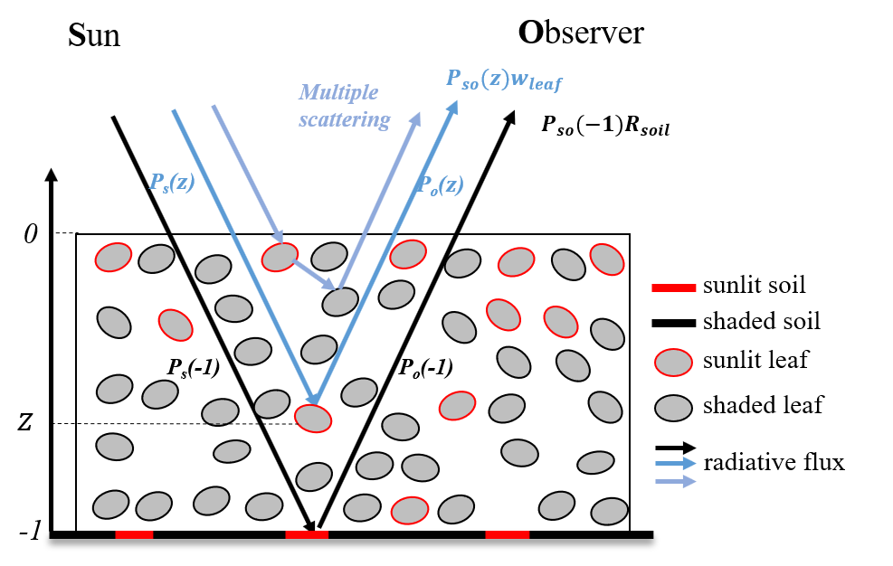
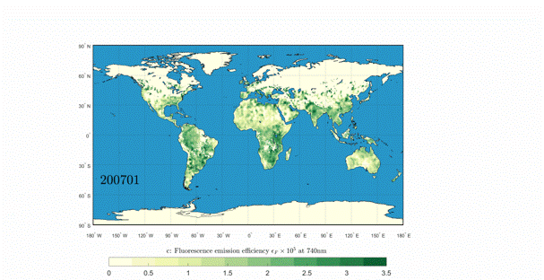
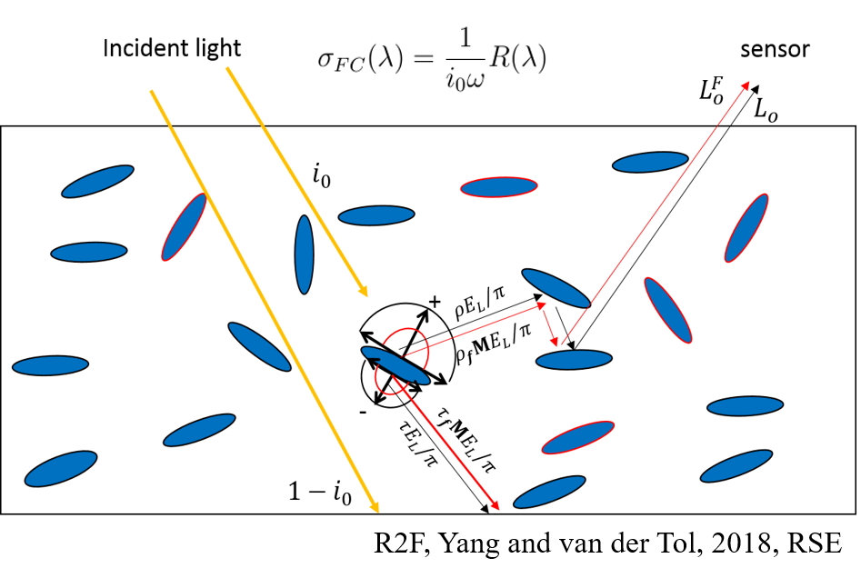
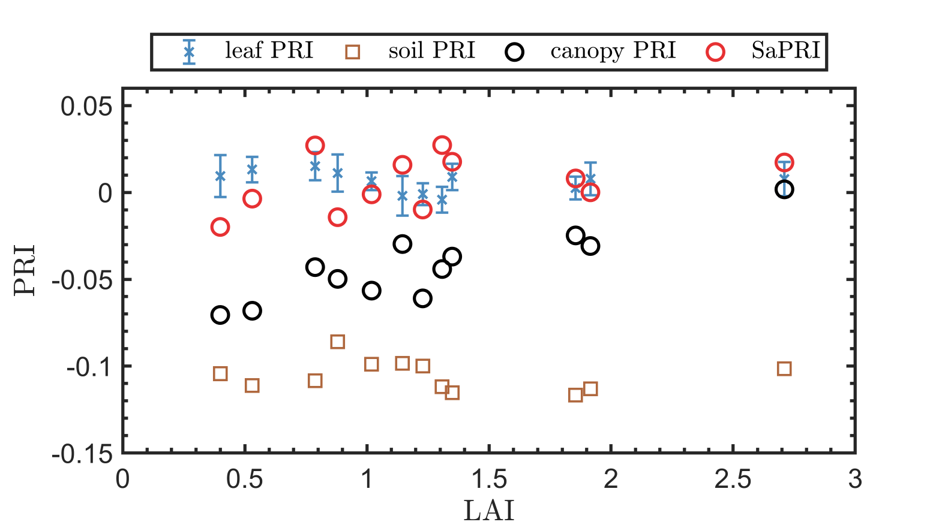
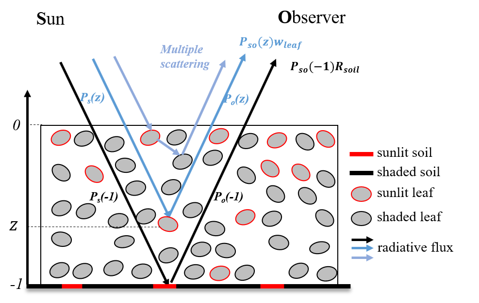
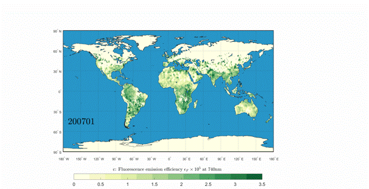
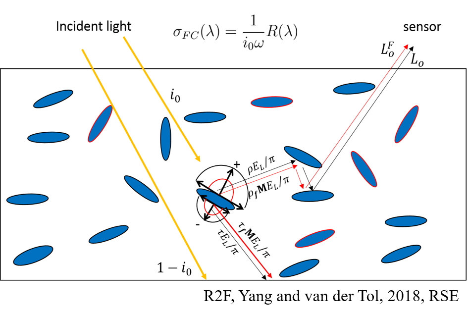
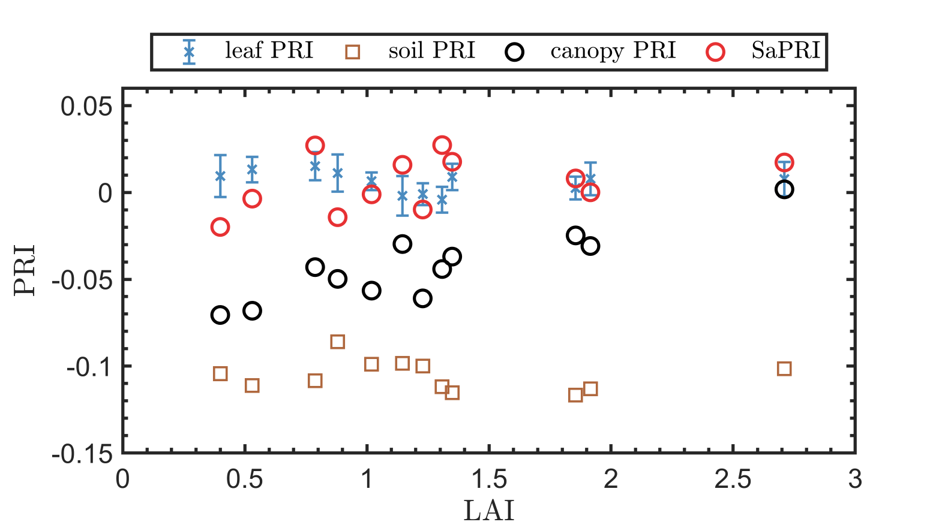

1. Radiative Transfer & Quantitative Remote Sensing
We develop physically based models to understand how electromagnetic radiation is scattered, absorbed, and emitted by vegetation canopies. Our research integrates optical, thermal infrared, and fluorescence radiative transfer to bridge leaf-, canopy-, and landscape-scale observations.
- Optical–thermal–fluorescence radiative transfer (BSM, Unified four-stream, SPART)
- Spectral invariants & recollision probability theory (linking KM and p theories)
- Coupling radiative transfer and biochemical processes (SCOPE2.0, mSCOPE)
- Model inversion for land surface properties (temporal autocorrelation in retrievals)
• Yang et al., RSE, 2020 – SPART model
• Yang, van der Tol and Verhoef, RS, 2020 – Unified four-stream
• Yang et al., RSE, 2025 – KM–p theory
• Yang et al., RSE, 2017 – mSCOPE model
• Yang et al., GMD, 2021 – SCOPE 2.0 model
• Yang et al., RSE, 2021 – Time series retrievals
 








2. Vegetation Physiology, SIF & PRI
We study vegetation physiological signals derived from solar-induced chlorophyll fluorescence (SIF) and photochemical reflectance index (PRI). Our work links energy partitioning and structural effects to strengthen the physiological basis of remote sensing indicators.
- Linking far-red SIF with NIR reflectance and developing reflectance-based methods for decoupling SIF signals （R2F, saR2F, FCVI）
- PRI structural effects and downscaling methods (saPRI)
- Separation of the direct reflection of soil from canopy spectral reflectance (RBB, TBB, LAB)
- Leaf and canopy energy partioning and heat wave
• Yang and van der Tol, RSE, 2018 – Reflectance-to-fluorescence (R2F methods)
• Yang et al., RSE, 2020 – FCVI, fluorescence correction vegetation index
• Yang, RSE, 2022 – decoupling PRI
• Yang, RSE, 2024 – saPRI, soil-adjusted PRI
• Yang et al., RSE, 2025 – saR2F, soil-adjusted R2F methods
• Yang et al., RSE, 2025 – Soil correction methods (RBB,TBB,LAB)
3. 3D Vegetation Structure & LiDAR
We reconstruct fine-scale 3D vegetation structure from terrestrial, airborne, and UAV LiDAR. Our research quantifies canopy architecture, leaf angle distribution, and vertical leaf area profiles, supporting accurate radiative transfer and ecosystem modeling.
- Terrestrial & UAV LiDAR 3D reconstruction
- LAI and leaf angle distribution quantified by terrestrial LiDAR
- GEDI waveform analysis (natural vs. plantation forests)
• Han, Liu & Yang, RSE, 2026 – LiDAR+reflectance for forest fPAR
• Liu et al., ISPRS, 2019 – Leaf angle distribution from Tereestrial LiDAR
• Liu et al., ISPRS, 2018 – Estimates of forest structure metrics from Tereestrial LiDAR
• Wang & Liu et al., JAG, 2024 – DART model and GEDI simulator for simulating GEDI waveforms in forests
4. Ecosystem Applications & Global Environmental Change
We apply remote sensing and eco-hydrological modeling to analyze vegetation responses to climate extremes, drought, urban heat stress, and long-term environmental change across multiple ecosystems.
- Vegetation phenology under climate warming (structural and functional)
- Urban vegetation cooling & nature-based solutions
- Cropland photosynthesis, GPP modeling & drought monitoring
- Carbon–water cycle and ecosystem resilience
• Li et al., RSE, 2023 – Urban vegetation greening and browning
• Shi & Yang, CEE, 2025 – Optimal temperature, onset shifts and warming climate
• Shi & Yang, AFM, 2025 – Opposite effects of temp. and precip. on onset in Africa
• Yang et al., AFM, 2023 – Drivers of the SIF-GPP relationship